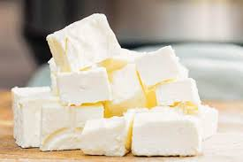
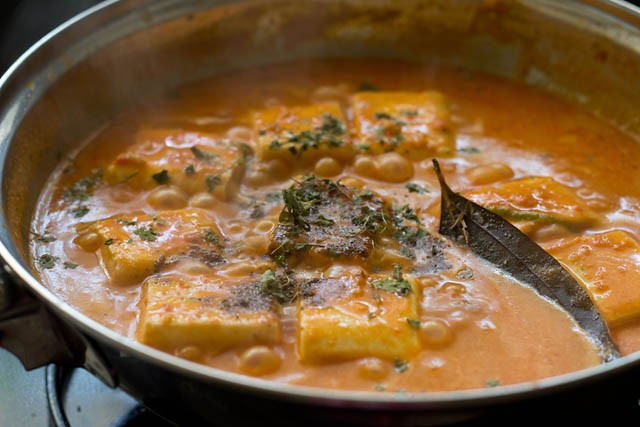

Ingredients Needed:
1 onion
10-15 cashew
2 chilli
1/2 inch ginger
1/2 stick cinnamon
5 black pepper
5 cloves
2 tbsp unsalted butter
 8-10 paneer cubes
2 tbsp tomato paste(canned)
salt to taste
sugar to taste
2 tsp turmeric
2 tsp red chilli powder
1 tsp coriander powder
3 tbsp heavy cream
2 cups pasta of your choice
Steps to make Paneer Pasta:
(Note: Tofu can be used in place of Paneer.)
Step 1:
Make a paste of tomatoes, cashew, ginger, onion, chilli, cinnamon stick, cloves, black pepper by blending them into a puree.
Step 2:
Strain the puree to get a smooth flowing paste.
Step 3:
Heat a pan and add butter. Let the butter melt and add paneer cubes to it.Let them get a little ligt brown and bell peppers.
Step 4:
Add tomato paste and stir it. Add the smooth paste to the pan and mix it. Add 1/2 cup water to it.
Step 5:
Add salt, sugar, turmeric, red chilli powder, coriander powder to the paste.
Step 6:
Add heavy cream. Add water if needed. Let it cook for 10 mintues with lid on.
Step 7:
Add pasta and mix it. Serve Hot.